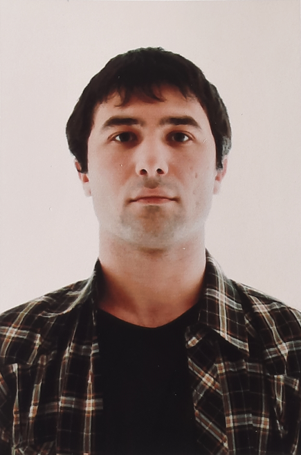

Резюме
| Фамилия |
Sapozhnikov
Сапожников |
| Имя |
Yegor
Егор |
| Отчество |
Viacheslavovich
Вячеславович |
| Номер телефона: |
8-900-922-10-39 |
| e-mail: |
SYegorV@gmail.com |

| Дата рождения: |
17.06.1990 |
| Пол: |
Мужской |
| Гражданство: |
Россия |
| Семейное положение: |
Не женат |
| Дети: |
Нет |
| Языки: |
Английский (А1) |
| готов к переезду |
Образование:
| ТОМСКИЙ ГОСУДАРСТВЕННЫЙ УНИВЕРСИТЕТ |
07.2013 - 02.2022 |
| СИСТЕМ УПРАВЛЕНИЯ И РАДИОЭЛЕКТРОНИКИ |
| г. Томск |
| Форма обучения: очная |
| Факультет: РТФ |
| Специальность: 11.05.01 Радиоэлектрнонные системы и комплексы |
| Квалификация: инженер |
| Государственное образовательное учреждение НПО |
09.2006 - 06.2009 |
| Профессиональное училище №10 |
| г. Северск |
| Форма обучения: очная |
Навыки:
AutoCAD - инженерная и компьютерная графика
MathCAD - вычисление математических записей
Matlab - программирование
Simulink - моделирование
Microsoft Office Word, PowerPoint, Excel, Visio, MathType
Devcpp
Qt
P-CAD - проектирование
Linux "Debian"
LibreOffice Writer, Impress, Calc
Java
Python
CST Studio Suite
Photoshop
PowerShell
HTML & CSS
https://syegorv.github.io/resume/ - сайт резюме